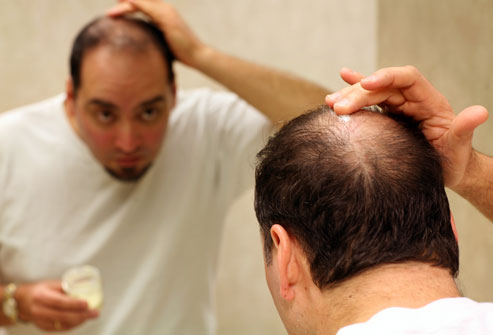

You have enough things on your mind
Your Hair Loss Shouldn't Be One Of Them
Wig Is Not Just A Wig
A wig is not just a wig when it comes to men/women dealing with medical hair loss.It is not being worn for reasons of fashion and fun, like many of the varieties seen in wig shops. We understand that this is not done on a whim and certainly not something that you plan to wear for only a few hours while out on the town. For people with medical hair loss, a wig serves as the perfect solution to replace your hair as authentically as possible as well as to restore your self-confidence. You should feel comfortable about wearing a wig. It should look natural and beautiful and fit perfectly, so you hardly notice it’s there and others do not notice at all. HairPeace of mind offers wigs created especially for people whose scalps are tender. Our wigs are lightweight and look completely natural.
Appearance
In our experience, most women want to keep their hair loss their secret and a very private matter. If that's the case, you will want to select a hairstyle and haircolor shade that will closely match your hair the way it looked before you began your treatments. This way, we will help by having your wig ready for you when you need it. Two of the most important factors about wearing a wig are feeling comfortable in it and feeling comfortable about it. The more closely your wig matches your natural hair, the more comfortable and confident you will feel about yourself. Your HairPeace of Mind specialist will be able to help you carefully select the best options and solutions that will match your personal needs, lifestyle and image.
Wig Buying Guide
Finding a wigdoesn't have to be overwhelming. If you are losing your hair due to cancer, alopecia, chemotherapy treatments or other medical conditions, or if you simply want a new look, this buying guide will help you to choose the right wig for you. The encouraging news is that no one will be able to tell that you are wearing a wig. Typically when women start wearing their wig for the first time, their friends will tell them how great their new haircut looks, not realizing it's actually a wig. If you have always wanted a different hair style or color, there couldn't be a better time to experiment. Maybe you have always wanted to be a redhead. Or maybe you always wished your straight hair had curls. With wigs, the options are limitless.